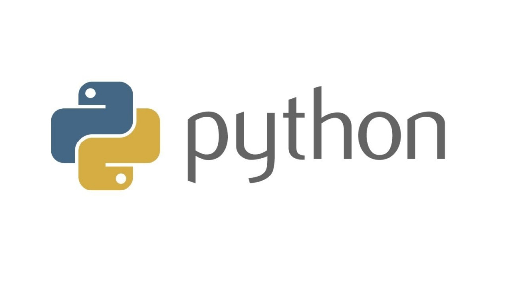

Доброго Дня! Начнем наше 1 занятие.
Наш курс называется «Программирование на языке Python».
И перед тем, как мы начнем писать настоящие программы - давайте, сначала, внимательно рассмотрим название нашего курса и убедимся, что мы все его понимаем.

В названии курса есть такие слова – программирование, язык, python.
Давайте начнем с понятия "язык". Нам интересна не вся суть понятия "Язык", а только определенная его часть. А именно - такое свойство языка как "обеспечение понятной коммуникации". Язык – это одно из самых важных достижений человечества. До появления языка люди не могли эффективно общаться и понимать друг друга. И скорее всего использовали рисунки или жесты.
Представьте эксперимент, когда людям попадается задача - общаться без языка. Заметьте сколько ошибок в коммуникации у общающихся.
С появлением у людей такого инструмента, как язык - обмен сообщениями между людьми, становится намного проще, но есть одно очень важное условие. У общающихся людей должно быть одинаковое понимание одних и тех же слов и звуков.
Например, слово "стол" понятно каждому из нас. Мы легко понимаем инструкцию "посмотри на стол" и можем выполнить ее. Однако, если мы скажем "поступай справедливо", каждый может понять это по-своему. Так как у каждого свое собственное понимание справедливости.
На любом языке можно пытаться давать инструкции другому человеку, на русском, английском, немецком. Например, "встань и принеси мне из холодильника холодный лимонад Coca-Cola" – достаточно четкая инструкция, которую легко выполнить, потому что каждое слово имеет однозначное значение.
Однако, если инструкция звучит так: "принеси мне что-нибудь вкусное из холодильника", она становится более сложной для понимания. Опять же из-за разного понимания, что такое "вкусное". Так например выбор обоев, зачастую - становится сложной проблемой.
С развитием человечества появлялось все больше языков. Каждая нация и страна, получала свой собственный язык. Благодаря этому, жизнь простых граждан становилась намного легче, так как каждому предмету или явлению можно было присвоить свое слово. Мир становился все более осознаваемым и понятным. Однако язык все-таки был ограниченным средством общения между людьми одной общины или нации.
ПРОГРАММИРОВАНИЕ! Или что имеет отношение к компьютеру?
Удивительно, но каждый из Вас с детства - уже умеет программировать. Ведь Вы уже знаете русский язык и способны давать инструкции на нем. Попробуйте дать мне инструкции, чтобы я прошел 5 шагов вперед и повернулся. Логика проста: если я и Вы понимаем одно и то же под определенным словом (например, я понимаю, что такое шаг и цифра 5), и я способен и хочу выполнить Вашу команду физически, то инструкция будет выполнена.
Итак, программирование - это составление набора инструкций! Довольно просто, не так ли? Но какое это имеет отношение к нашей теме? Язык, о котором мы говорили ранее стремительно развивался. И в какой-то момент люди научились записывать слова и мысли на бумагу. А потом появились рукописи, а затем книги. С появлением книгопечатания, а позже и библиотек (хранилищ информации) количество записанной в книги информации в мире значительно вырастает. Один человек уже не в состоянии справиться с ее обработкой. Представьте, что Вы пришли в большую библиотеку с инструкцией посчитать все буквы "о" во всех книгах. Вам может показаться, что никому не нужно знать количество букв "о" в книгах. Однако это реальная задача - иногда необходимо знать, насколько часто определенная буква употребляется в русском языке. Чтобы решить эту задачу, даже страшно представить, сколько времени человеку придется провести в библиотеке. Человеку нужно спать, отдыхать и делать перерывы, а сам человек очень медленный, а порой даже ленивый.
По мере развития истории - задач c обработкой информации, в мире с каждым годом становилось все больше и больше. Человек уже не мог справиться с такими объемами информации. Нужно было найти что-то, что быстрее человека и способного выполнить подобные задачи в тысячи или даже сотни тысяч раз быстрее. И человеку удалось найти то, что гораздо быстрее. Это электричество. Электричество работает со скоростью света, примерно 299 792 458 м/с. Это несравнимо быстрее, чем человек.
Что бы понять разницу в скорости человека и электричества, представьте двух людей. Один живет в городе А, другой живет в городе Б. Между городами А и Б расстояние 100км. Оба человека хотят отправить друг другу сообщение "Привет". Первый напишет слово "привет" на бумаге и отправиться ко второму пешком, передавать свой лист. Его путь займет более 20 часов. Второй человек напишет слово "привет" в приложении Вконтакте, и отправит его через интернет, в таком случае доставка сообщения, займет доли одной секунды! Вот настолько электричество будет быстрее человека.
Получив электричество, человек пустил его по проводам и научился передавать информацию с его помощью. Но как это сделать? Как передавать информацию электричеством по проводам. Примерно также как моргать фонариком в ночи. Скорость электричества просто невероятна и способна обогнуть мир, за считанные секунды. Последовательно передавая по проводам сигналы мы передаем информацию.
Итак, мы только что поняли и выучили язык электричества или язык компьютера. Удивительно, что он состоит только из двух символов - 0 и 1. И он способен воспроизводить музыку, игры и многое другое.
Что же такое Python?
Python – это язык программирования. Создал его веселый и смешной дядька Гвидо Ван Россум, а название этому языку он дал благодаря своему любимому сериалу "Летающий цирк Монти Пайтона". Вспомните себя в детстве, наверное, Вы придумывали свои языки и даже правила общения на них. Тут что-то похожее. Гвидо придумал свой язык и правила, как на этом языке разговаривать. Вот только нужен этот язык не для того, чтобы два человека разговаривали друг с другом, а для того, чтобы человек разговаривал с компьютером.
А теперь самое непонятное. На языке python человек будет общаться не с другим человеком, а с компьютером. Однако компьютер работает на силе электричества и его язык это язык 0 и 1. В то-же время в языке Python нет 0 и 1. Как так? Python создан для общения с компьютером, верно? А компьютер понимает только язык электричества, верно? Но в Python нет 0 и 1. Разве тогда они поймут друг друга? Ответ – да! Но! Если у них будет переводчик.
Дело в том, что свои инструкции компьютеру, программист пишет в специальных программах. Они называются - "средами разработки". После того как программист составит свою инструкцию на языке python, среда разработки (программа в которой программист писал код) возьмет на себя роль переводчика. Ее задачей станет перевести ваши инструкции в язык понятный компьютеру, а именно язык 0 и 1. Схожим образом работают и обычные переводчики, в нашей реальной жизни. В примере ниже - происходит перевод с русского языка на язык глухонемых.
Как выучить язык python? Представьте, что Вы учитесь английскому. Вы берете из языка какое-то слово, сначала понимаете, за что это слово отвечает, как правильно пишется, где и в каком месте употребляется, какие у него есть правила и исключения (типа жи-ши). Затем мы выучиваем это слово и можем им пользоваться. Так мы повторяем раз за разом, выучивая новые слова. И когда количество выученных нами слов станет достаточно большим, мы сможем разговаривать с англичанином.
Так же и с Python. Будем представлять язык Python как большой мешок, в котором лежат команды (слова), мы будем доставать по одной команде, изучать ее, выучивать и брать следующую. Все точно так же, как с любым другим языком.
До встречи на следующем уроке